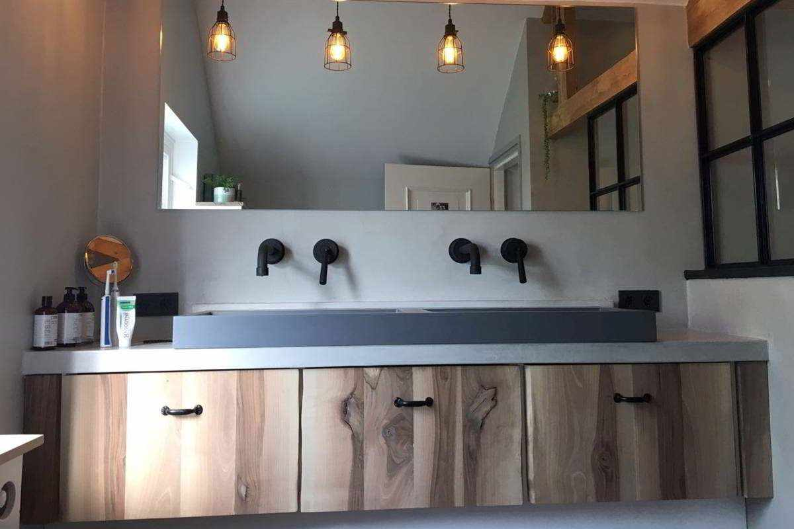
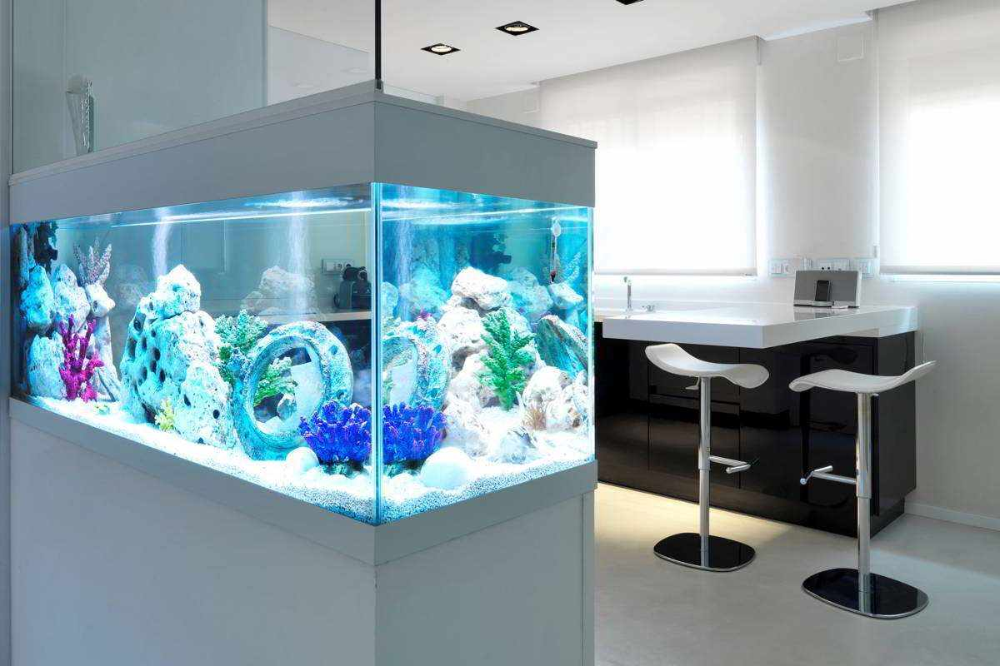

Η Topciment παρουσιάζει το Efectto!
Η Topciment παρουσιάζει το Efectto, την νέα σειρά συνεχόμενων επιστρώσεων έτοιμων για χρήση υψηλής διακόσμησης.

Το Efectto είναι μια ευρεία γκάμα προϊόντων με μεγάλη ποικιλία φινιρισμάτων που θα αποκαλυφθούν τους προσεχείς μήνες. Το πρώτο από αυτά τα νέα προϊόντα που βλέπουν το φως είναι το Efectto Quartz.
Το Efectto Quartz οφείλει το όνομά του στο ορυκτό και φυσικό φινίρισμα που το χαρακτηρίζει. Μόλις εφαρμοστεί, αυτό το προϊόν επιτρέπει την επίτευξη εξαιρετικών διακοσμητικών φινιρισμάτων. Το τελείωμα του είναι παρόμοιο με την πατητή τσιμεντοκονία, αλλά με πολύ πιο φυσική υφή και χωρίς 'σύννεφα'.
Επιπλέον, ένα από τα μεγάλα πλεονεκτήματα που έχει το Efectto Quartz είναι ότι είναι έτοιμο για χρήση, οπότε η προετοιμασία του είναι λιγότερο επίπονη και πιο πρακτική. Απλά πρέπει να ανοίξετε την συσκευασία και να αρχίσετε να εργάζεστε.
Τόσο το Efectto Quartz όσο και τα υπόλοιπα προϊόντα της οικογένειας Efectto είναι αποτέλεσμα μιας επίπονης έρευνας για νέα υλικά και τεχνικές παραγωγής, προκειμένου να προσφέρουμε στους πελάτες μας προϊόντα υψηλής ποιότητας.
Η Topciment, με την προθυμία της να καινοτομεί, προσφέρει στον επαγγελματία ένα μοναδικό προϊόν, που σπάει τα στερεότυπα και τις διακοσμητικές συμβάσεις.
Topciment αλλάζει την εικόνα της!
Στην Topciment αποφασίσαμε να πάμε ένα βήμα παραπέρα όσον αφορά στον σχεδιασμό:
ανανεώσαμε την εικόνα και την αισθητική των προϊόντων μας.
Παρουσιάζουμε την γκάμα των προϊόντων μας Sttandard με την ίδια ποιότητα και απόδοση,
αλλά με μια ανανεωμένη εικόνα, πολύ πιο οπτική και σύγχρονη, χωρίς να χάνεται η ουσία Topciment.

Με αυτή τη βελτίωση θέλουμε να ανεβούμε ένα βήμα όσον αφορά στον σχεδιασμό και να έχουμε την εικόνα που πραγματικά αντιπροσωπεύει την μάρκα μας. Υλικό TOP, σχέδιο TOP.
Επιπλέον, συνδέσαμε ένα συγκεκριμένο χρώμα με κάθε ένα από τα προϊόντα, για να διευκολύνουμε τον εντοπισμό τους και έτσι να διευκολύνουμε το έργο όλων των ανθρώπων που εργάζονται με τα υλικά μας.
Το διακριτικό TT της Topciment έχει εξέχουσα θέση σε αυτόν τον νέο σχεδιασμό και υπήρξε ο κεντρικός άξονας αυτής της ανανέωσης της εικόνας και της ονομασίας του προϊόντος. Έτσι η γραμμή της πατητής τσιμεντοκονίας μας αλλάζει όνομα. Πρόκειται για μια ριψοκίνδυνη κίνηση, αλλά περνάμε από ένα πολύ κοινό όνομα, όπως το 'δύο συστατικών', σε ένα το οποίο είναι κομμένο και ραμμένο στα μέτρα της Topciment: Sttandard, πάντα με το TT να ενισχύει το εμπορικό σήμα.
Ως εκ τούτου, από τώρα και στο εξής η πατητή τσιμεντοκονία μας των δύο συστατικών μετονομάζεται σε:
- Sttandard Microbase 20KG
- Sttandard Microfino 20KG
- Sttandard Microstone 20KG
- Sttandard Microdeck 20KG
- Sttandard Aquaciment 20KG
Ωστόσο, αυτή η αλλαγή δεν είναι μόνο στο αισθητικό επίπεδο αλλά και στην ποιότητα και την εργονομία των κουβάδων, επειδή δεν επικεντρωνόμαστε μόνο στην εικόνα αλλά και στην επίτευξη της καλύτερης ποιότητας σε ό, τι περιβάλλει την Topciment.
Με όλες αυτές τις βελτιώσεις, η Topciment θέλει να ενισχύσει την εικόνα και τη θέση της ως η καλύτερη μάρκα πατητής τσιμεντοκονίας από την άποψη της ποιότητας των υλικών καθώς και από άποψη σχεδιασμού. Πάντα χωρίς να ξεχνάμε τους ανθρώπους που δουλεύουν μαζί μας, γιατί όλα είναι για αυτούς.
H Topciment συστήνει την Festool για μια τέλεια εφαρμογή
Η καλή εφαρμογή της πατητής τσιμεντοκονίας εξαρτάται από πολλούς παράγοντες, ένας από αυτούς είναι και τα προϊόντα ποιότητας, τα οποία πρέπει να έχει ένας επαγγελματίας που κατέχει την τεχνική εφαρμογής και ταυτόχρονα χρησιμοποιεί τα καλύτερα εργαλεία για να επιτύχει ένα εξαιρετικό αποτέλεσμα.
Η μέθοδος εφαρμογής Topciment απαιτεί διαφορετικά εργαλεία για κάθε ένα από τα διαφορετικά βήματα. Σύμφωνα με τα βήματα της διαδικασίας εφαρμογής, προτείνουμε τις ακόλουθες μηχανές Festool:εξαιρετικές μηχανές για την επίτευξη ενός ομοιόμορφου και εύχρηστου μείγματος. Το σύστημα ErgoFix επιτρέπει την προσαρμογή του ύψους της ράβδου ώστε να αποφευχθεί τραυματισμός της πλάτης. Επιπλέον, η κατασκευή των ελαστικών ακμών της είναι σχεδιασμένη ώστε να αντέχει πιθανές προσκρούσεις και ισχυρά χτυπήματα. Σε αυτά τα μίξερ μπορούμε να ενσωματώσουμε ράβδους χωρίς την χρήση εργαλείων. Συγκεκριμένα, οι ελικοειδείς ράβδοι HS είναι τέλεια προσαρμοσμένες στις μηχανές και μπορούν να κινούν έως και 60 κιλά υλικού. Είναι ιδανικές για βαριά και ιξώδη μίγματα, όπως η πατητή τσιμεντοκονία, τα αυτοεπιπεδούμενα ή τα εποξικά.


Κινητά συστήματα Cleantec:σύγχρονες ηλεκτρικές σκούπες με τις οποίες επιτυγχάνεται εξαιρετική καθαριότητα σε χρόνο ρεκόρ. Είναι ο καλύτερος τρόπος για να αποφύγετε τα σύννεφα ρύπων κατά την εκτέλεση των εργασιών. Παρομοίως, εμποδίζει την εισπνοή συνεχούς σκόνης που μπορεί να προκαλέσει επιβλαβείς επιδράσεις στην υγεία των ανθρώπων που χρησιμοποιούν τα τριβεία σε καθημερινή βάση. Από την άλλη πλευρά, ο σχεδιασμός τους επιτρέπει μια άνετη μεταφορά, αφού έχουν ισχυρή δομή, μεγάλους τροχούς και χαλύβδινους άξονες για να αποφευχθεί οποιαδήποτε ζημιά κατά τη διάρκεια του ταξιδιού και τυχόν ανατροπές.
Τα αποτελέσματα της χρήσης αυτών των εργαλείων, σε συνδυασμό με τα προϊόντα Topciment για την εφαρμογή της πατητής τσιμεντοκονίας, είναι έργα υψηλής ποιότητας, καθαρά και υγιεινά.
More information: https://www.festool.co.uk/

Νέα
Σε συνεργασία με το About Decoration Blog, κάναμε μια δημοσίευση,
όπου σας παρουσιάζουμε διάφορες εφαρμογές που μπορούν να γίνουν με πατητή τσιμεντοκονία σε εξωτερικούς χώρους. Μήπως ήρθε η ώρα να κάνετε αυτήν την αλλαγή στην βεράντα ή στον κήπο σας; Εμπνευστείτε από τις παρακάτω ιδέες!

Λάθη που πρέπει να αποφευχθούν στον συνδυασμό των χρωμάτων
Η χρήση τολμηρών χρωμάτων στην διακόσμηση είναι τάση, αλλά πρέπει να δώσουμε ιδιαίτερη προσοχή για να μην γίνουν λάθη.
Στο interior design ο συνδυασμός ορισμένων τόνων μπορεί να καταλήξει σε πραγματική καταστροφή. Βέβαια, μπορεί ο συνδυασμός των χρωμάτων να είναι ένα επικίνδυνο παιχνίδι αλλά είναι προσιτό σε όλους. Ακόμα και αν συχνά πιστεύεται ότι αυτή η τέχνη προορίζεται μόνο για τους επαγγελματίες στον τομέα της διακόσμησης. Στην Topciment σας προτείνουμε ορισμένα κόλπα για να πετύχετε το τέλειο αποτέλεσμα ,όταν θα κάνετε ανακαίνιση σε διαφορετικούς χώρους στο σπίτι σας
1o Λάθος - Ο συνδυασμός παραπάνω από 3 χρώματα
Στο interior design, αυτός είναι ένας από τους βασικούς κανόνες:η ένωση περισσότερων από τριών διαφορετικών τόνων στο ίδιο δωμάτιο δεν επιτυγχάνει αρμονία.Ο συνδυασμός τεσσάρων ή περισσότερων χρωμάτων μπορεί να προκαλέσει σύγχυση.Μια πολύ καλή ιδέα είναι να στοιχηματίσετε στο ίδιο φάσμα χρωμάτων: για παράδειγμα, από το απαλό ροζ στο φούξια, περνώντας μέσα από το φραμπουάζ. Η χρήση διαφορετικών εντάσεων βοηθά στην αποφυγή λαθών.

2ο Λάθος - Κατάχρηση των αντιθέσεων
Οι έντονοι χρωματικοί τόνοι δημιουργούν έλξη στο μάτι, αλλά η εφαρμογή διαφόρων στον ίδιο χώρο, μπορεί να μας κουράσει μετά από λίγο καιρό. Εντυπωσιακοί συνδυασμοί που λειτουργούν σε εστιατόρια ή ξενοδοχεία,μπορεί σε μια τραπεζαρία να κουράσουν και να δημιουργήσουν οπτική απόρριψη. Μια καλή επιλογή είναι να δοκιμάσετε έναν τοίχο, και αν το αποτέλεσμα δεν είναι αυτό που θέλετε, μπορείτε να το αναδιατάξετε ή να αλλάξετε τα διακοσμητικά στοιχεία μέχρι να έχετε το επιθυμητό αποτέλεσμα.
3ο λάθος - Η μη διαδοροποίηση του χώρου
Μέσα σε ένα σπίτι υπάρχουν δωμάτια όπου οι έντονοι συνδυασμοί μπορεί να ενοχλήσουν. Τα υπνοδωμάτια, οι κουζίνες και τα καθιστικά είναι περιοχές όπου περνάτε πολύ χρόνο και τα ασυνήθιστα χρώματα τείνουν να κουράζουν το μάτι. Οι περιοχές διέλευσης και σύνδεσης όπως ο διάδρομος ή η είσοδος, επιτρέπουν να κάνετε προκλητικούς συνδυασμούς με την τέλεια ευκαιρία να απελευθερώσουν την φαντασία.
4ο λάθος - Το ότι σκέφτεστε μόνο τους τοίχους
Πρέπει να θυμάστε ότι στην διακόσμηση δεν συμμετέχουν μόνο οι τοίχοι και τα δάπεδα,μπορείτε επίσης να χρησιμοποιήσετε σανίδες, πόρτες, έπιπλα ή οροφές. Δημιουργήστε ένα περίγραμμα μέσα σε έναν τοίχο ή παίξτε με τις αντιθέσεις στο πλαίσιο της πόρτας, που μπορεί να δημιουργήσει μια εκπληκτική σύνθεση. Με τον ίδιο τρόπο, καναπέδες, χαλιά ή μαξιλάρια, μεταξύ άλλων, που έχουν χρώμα και μπορούν να δημιουργήσουν θαυμάσια σύνολα.Το βασικό είναι να διαφοροποιήσετε τις αναλογίες, τις δοσολογίες και να τολμήσετε.

5ο λάθος - Οι σκούροι τόνοι στην αρχική διακόσμηση
Η ιδέα της αλλαγής μπορεί να οδηγήσει στο να ξεχνάμε ότι το ίδιο το σπίτι είναι ήδη ντυμένο με χρώματα, τόσο στους τοίχους όσο και στα δάπεδα και στα παράθυρα και τις πόρτες. Η δημιουργία μιας σύνθεσης χωρίς να ληφθούν υπόψη οι ήδη υπάρχοντες τόνοι μπορεί να υποβαθμίσει το τελικό αποτέλεσμα. Το πιο απλό είναι να ξεκινήσετε ένα έργο με τα υπάρχοντα στοιχεία, τα οποία χρησιμεύουν ως σημείο αναφοράς, και να επιτευχθεί ισορροπία από αυτό το σημείο.

Πατητή τσιμεντοκονία
στην κουζίνα
Τα καλύτερα γεύματα ετοιμάζονται σε ένα περιβάλλον που λειτουργεί ως πηγή έμπνευσης.
Κάθε σεφ χρειάζεται στοιχεία που συνοδεύουν τη δημιουργικότητά του και η πατητή τσιμεντοκονία βοηθάει σε αυτό μιας και είναι ένα προϊόν εξαιρετικά ευέλικτο: υπάρχουν διαφορετικά φινιρίσματα για κάθε γούστο. Είτε θέλετε να φτιάξετε μια νέα κουζίνα είτε θέλετε να κάνετε μια ανακαίνιση, μπορείτε να επιτύχετε εντελώς μοναδικά αποτελέσματα. Στην περίπτωση της ανακαίνισης, εφαρμόζεται στην υπάρχουσα επίστρωση με μέγιστο πάχος 3 χιλιοστών, γεγονός που επιτρέπει μια γρήγορη αλλαγή σε τοίχους και δάπεδα, χωρίς την ανάγκη εργασιών, θορύβου και υπολειμμάτων.
Η πατητή τσιμεντοκονία είναι ένα ουδέτερο υλικό που συνδυάζεται με κάθε τύπο κουζίνας: από κλασικές μέχρι σύγχρονες και από industrial μέχρι σκανδιναβικές. Οι ανοιχτές αποχρώσεις προσδίδουν φωτεινότητα και πλάτος, ενώ οι σκοτεινές δημιουργούν ζεστούς χώρους. Σε ανοιχτές κουζίνες, η πατητή τσιμεντοκονία προσφέρει τη δυνατότητα κάλυψης του δαπέδου και του καθιστικού, εναρμονίζοντας το σύνολο και δημιουργώντας συνέχεια. Εάν, ωστόσο, αυτό που επιθυμείτε είναι να δημιουργήσετε αντιθέσεις και ξεχωριστούς χώρους, μπορείτε να επιλέξετε αντίθετα χρώματα και να διαφοροποιήσετε με αυτόν τον τρόπο τα δωμάτια. Αφού επιλέξετε το φινίρισμα, το επόμενο βήμα είναι να επιλέξετε έπιπλα ανάλογα με τα χρώματα που χρησιμοποιήσατε. Υπάρχει ακόμα η επιλογή να καλύψετε τα έπιπλα με πατητή τσιμεντοκονία για να πετύχετε ένα πρωτότυπο και μοναδικό σχέδιο.
Η κουζίνα πρέπει να διατηρείται καθαρή καθώς είναι ο χώρος στον οποίο βρίσκονται οι τροφές.
Το δάπεδο όμως και οι τοίχοι εκτίθενται συνεχώς σε λιπαρές ουσίες και σε υγρά που στάζουν. Από αυτή την άποψη, η πατητή τσιμεντοκονία έχει ένα μεγάλο πλεονέκτημα μιας και η συντήρησή της είναι πολύ απλή. Επειδή δεν υπάρχουν αρμοί, ο καθαρισμός είναι πολύ εύκολος: με την σειρά προϊόντων Ecoclean της Topciment το δάπεδο και οι τοίχοι θα ακτινοβολούν καθαριότητα. Με αυτόν τον τρόπο αποφεύγεται η χρήση επιθετικών προϊόντων όπως η χλωρίνη ή η αμμωνία, τα οποία δημιουργούν δυσάρεστες οσμές και μπορούν να προκαλέσουν προβλήματα υγείας.
Η άνεση και η εξατομίκευση συνδυάζονται για να αποκτήσετε φανταστικές κουζίνες με ένα κοινό στοιχείο: την επίστρωση με πατητή τσιμεντοκονία.

Πατητή Τσιμεντοκονία
χωρίς προβλήματα
Πώς να αποφύγετε προβλήματα με την πατητή τσιμεντοκονία; Μια εφαρμογή με την Topciment εγγυάται προϊόντα υψηλής ποιότητας, πιστοποιημένους τεχνίτες και ειδικούς στην πατητή τσιμεντοκονία.
Μια ανακαίνιση με πατητή τσιμεντοκονία από έμπειρους επαγγελματίες και ποιοτικά προϊόντα εμποδίζει την εμφάνιση προβλημάτων κατά τη διάρκεια και μετά την περάτωση του έργου.
Το πρώτο βήμα είναι να επιλέξετε έναν ειδικό που γνωρίζει τα διαφορετικά υλικά και επιλέγει αυτά που έχουν την καλύτερη ποιότητα.
Η διαφοροποίηση των τύπων πατητής τσιμεντοκονίας και η εφαρμογή τους στην επιφάνεια για την οποία έχουν αναπτυχθεί είναι ουσιαστικής σημασίας για την εξασφάλιση μιας επιτυχημένης ανακαίνισης. Οι κατάλληλες συμβουλές αρχίζουν με την ανάλυση του υποστρώματος που πρόκειται να επικαλυφθεί και τον υπολογισμό των υλικών, του χρόνου και του κόστους, προσαρμοσμένο στα τετραγωνικά μέτρα που θα ανακαινιστούν.
Για να τοποθετήσετε την πατητή τσιμεντοκονία δεν είναι απαραίτητο να σηκώσετε το αρχικό υπόστρωμα, πρέπει ωστόσο να προετοιμαστεί σωστά. Εάν υπάρχουν αρμοί στο δάπεδο ή στους τοίχους, πρέπει να ενοποιηθεί η διαφορά ύψους και η απορρόφηση μεταξύ του υλικού και των αρμών. Μόλις ισοπεδωθεί η βάση, πρέπει να τοποθετηθεί ένα αστάρι το οποίο, εγγυάται την προσκόλληση μεταξύ του υπάρχοντος και του νέου υλικού και αφήνει την επιφάνεια με ομοιογενή απορρόφηση. Συνιστάται επίσης να χρησιμοποιείτε υαλόπλεγμα για να αποτρέψετε τη δημιουργία ρωγμών στη βάση.
Οι οδηγίες για τη χρήση της πατητής τσιμεντοκονίας πρέπει να τηρούνται αυστηρά για να εξασφαλιστεί ένα έργο χωρίς προβλήματα.
Ένας καλός επαγγελματίας θα αναμίξει σωστά τα συστατικά των διαφόρων προϊόντων για να εξασφαλίσει τη μέγιστη απόδοση τους (σκληρότητα, αδιαβροχοποίηση, κλπ.). Από την άλλη πλευρά, ο σεβασμός των χρόνων στεγνώματος είναι απαραίτητος για να αποφευχθεί η εμφάνιση λεκέδων υγρασίας. Μια δουλειά που ακολουθεί πιστά τα βήματα της εφαρμογής δεν δημιουργεί δυσκολίες.Μια εφαρμογή με την Topciment εγγυάται προϊόντα υψηλής ποιότητας, πιστοποιημένους τεχνίτες και ειδικούς στην πατητή τσιμεντοκονία, τεχνική υποστήριξη κατά την εκτέλεση του έργου και μια αποτελεσματική ομάδα η οποία είναι δίπλα σας για την επίλυση υφιστάμενων αμφιβολιών. Επικοινωνήστε μαζί μας εάν χρειάζεστε περισσότερες πληροφορίες.

Νέα προϊόντα για την καθαριότητα και την συντήρηση της πατητής τσιμεντοκονίας
Η Topciment λανσάρει τέσσερα νέα προϊόντα ειδικά σχεδιασμένα για την φροντίδα, την συντήρηση και την καθαριότητα της πατητής τσιμεντοκονίας. Τα καθαριστικά Ecoclean και Ecoclean PRO είναι οικολογικά και η χρήση τους ενδείκνυται για οικιακή και επαγγελματική χρήση αντίστοιχα.
Με τα κεριά διατήρησης για δάπεδα Ceraciment και Ceraciment PRO διατηρείται η σκληρότητα και η φυσική λάμψη για πολύ περισσότερο. Η ειδική τους φόρμουλα επιτρέπει τον εμπλουτισμό και την διείσδυση στα επεξεργασμένα δάπεδα και πιο συγκεκριμένα στα δάπεδα από πατητή τσιμεντοκονία.
Στην ενότητα για Επαγγελματίες >> Τεχνικά Έγγραφα(Professionals >> Technical Sheets) μπορείτε να κατεβάσετε σε μορφή pdf τα έγγραφα για αυτήν την νέα γκάμα προϊόντων της Topciment για την καθαριότητα και την φροντίδα.

Η Τοpciment ανανεώνει τη συνεργασία της με τη CYPE για ακόμη μια χρονιά
Η Τοpciment ανανέωσε τη συνεργασία της με τη CYPE για ακόμη μια χρονιά. Με αυτή τη συμφωνία, η εταιρεία πατητής τσιμεντοκονίας microcemento θα εξακολουθήσει να συνεργάζεται με τους επαγγελματίες του κατασκευαστικού κλάδου στον τομέα της κατάρτισης προϋπολογισμού έργων.
Έτσι λοιπόν, η εταιρεία με έδρα τη Manises καθιερώνεται ως μια από τις επιχειρήσεις που ενδιαφέρεται ενεργά και εστιάζει στη συνεργασία με αρχιτέκτονες και μηχανικούς. Η εν λόγω συμφωνία δίνει στους συγκεκριμένους επαγγελματίες τη δυνατότητα να βρίσκουν ακριβείς και αναλυτικές περιγραφές των χαρακτηριστικών κάθε μονάδας έργου, εν προκειμένω της πατητής τσιμεντοκονίας, μέσω του συστήματος υπολογισμού τιμών.
Το σύστημα υπολογισμού τιμών, μια πλατφόρμα την οποία επισκέπτονται ετησίως πάνω από δύο εκατομμύρια χρήστες, είναι ένα αποτελεσματικό ηλεκτρονικό εργαλείο που χρησιμοποιείται από αρχιτέκτονες και υπεύθυνους έργων και το οποίο υπολογίζει τις προβλεπόμενες τιμές και το κόστος και διευκολύνει έτσι την πλήρη και αξιόπιστη τεκμηρίωση ενός έργου. Περιλαμβάνει επίσης τις πληροφορίες που αφορούν τους κατασκευαστές και τα προϊόντα τους.
Ολισθηρότητα
Η αντίσταση στην ολίσθηση ενός δαπέδου είναι θεμελιώδης παράγοντας ασφάλειας, ο οποίος καθορίζεται από τη φύση της επιφάνειας. Η μειωμένη πρόσφυση μπορεί να οδηγήσει σε απώλεια ισορροπίας και να αυξήσει τον κίνδυνο πτώσεων. Πρόκειται για ένα χαρακτηριστικό στο οποίο πρέπει να δίνεται προσοχή κατά την επιλογή των υλικών που θα χρησιμοποιηθούν στην κατασκευή δαπέδων.
Οι απαιτήσεις των κανονισμών ασφαλείας όσον αφορά την ολισθηρότητα του δαπέδου εξαρτώνται από το είδος της δραστηριότητας που λαμβάνει χώρα πάνω στο δάπεδο, την κλίση και την τοποθεσία του.
Με γνώμονα την παροχή λύσεων που εγγυώνται την ασφάλεια των πελατών μας, η Τοpciment πραγματοποίησε δοκιμές ολισθηρότητας στο Wessex, το μοναδικό εργαστήριο στην Ισπανία που ειδικεύεται σε δοκιμές τέτοιου είδους. Δεδομένου ότι η εφαρμογή της πατητής τσιμεντοκονίας είναι μια διαδικασία που επηρεάζεται από πολλούς παράγοντες, πραγματοποιήσαμε δοκιμές με διάφορες εναλλακτικές εφαρμογής και φινιρίσματος, ούτως ώστε να πετύχουμε ένα αποτέλεσμα που να συμμορφώνεται με τους ισχύοντες εθνικούς και διεθνείς κανονισμούς σχετικά με την ολισθηρότητα.
Με βάση τα αποτελέσματα αυτών των δοκιμών, οι τεχνικοί μπορούν να επιλέγουν το κατάλληλο σύστημα επίστρωσης ανάλογα με τις ανάγκες ολισθηρότητας, προκειμένου να συμμορφώνονται με τις απαιτήσεις των κανονισμών ασφαλείας. Πρέπει ωστόσο να έχουμε υπόψη μας ότι η πατητή τσιμεντοκονία τοποθετείται in situ και ο τρόπος εφαρμογής από τον εκάστοτε τεχνίτη επηρεάζει το τελικό αποτέλεσμα, ως εκ τούτου τα αποτελέσματα των δοκιμών που παρέχουμε θεωρούνται ενδεικτικά.